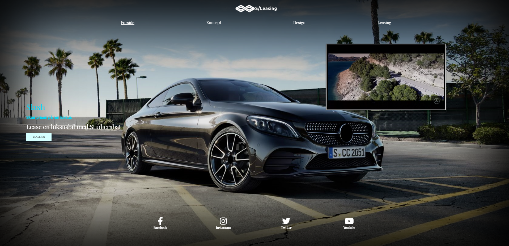
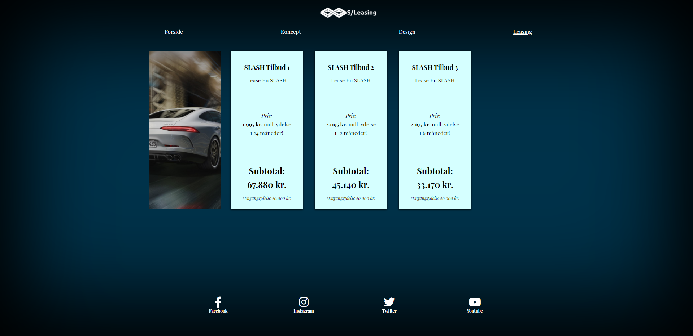

Videreudvikling af hjemmeside
Ud fra feedback, skulle vi justere conceptet fra del 1

I dette projekt skulle vores team genkode en mobilefirst hjemmeside, til desktop first. Herudover skulle vi fin justere kocept og design, ud fra feedback vi havde modtaget på prototypen fra del 1. Vi skulle også udforme content-plans til online markedsføring via sociale medier. I danmark bruges primært facebook. Men Instagram var også aktuelt, i vores planlægning.

Min primære rolle i forløbet var at støtte op om kodeningen. Det viste sig at være et større, men også spændende, projekt.